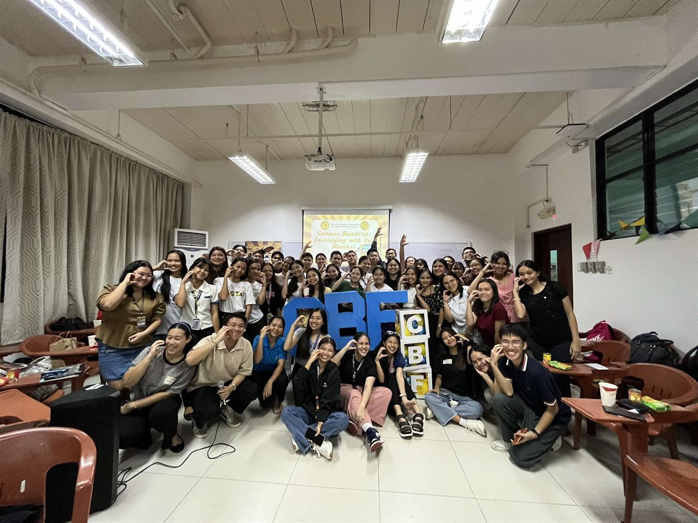
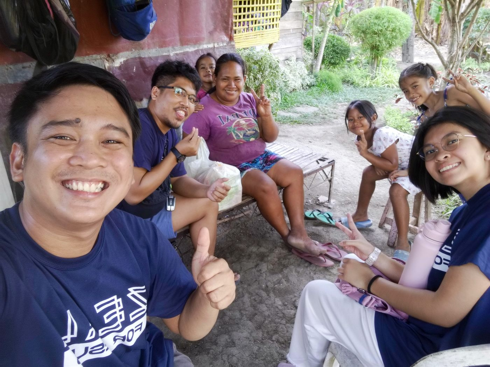
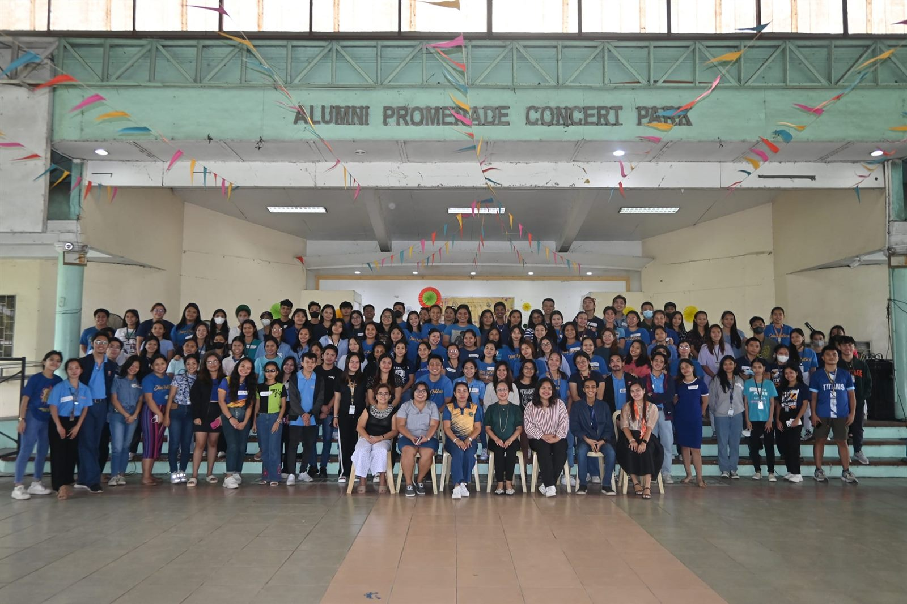
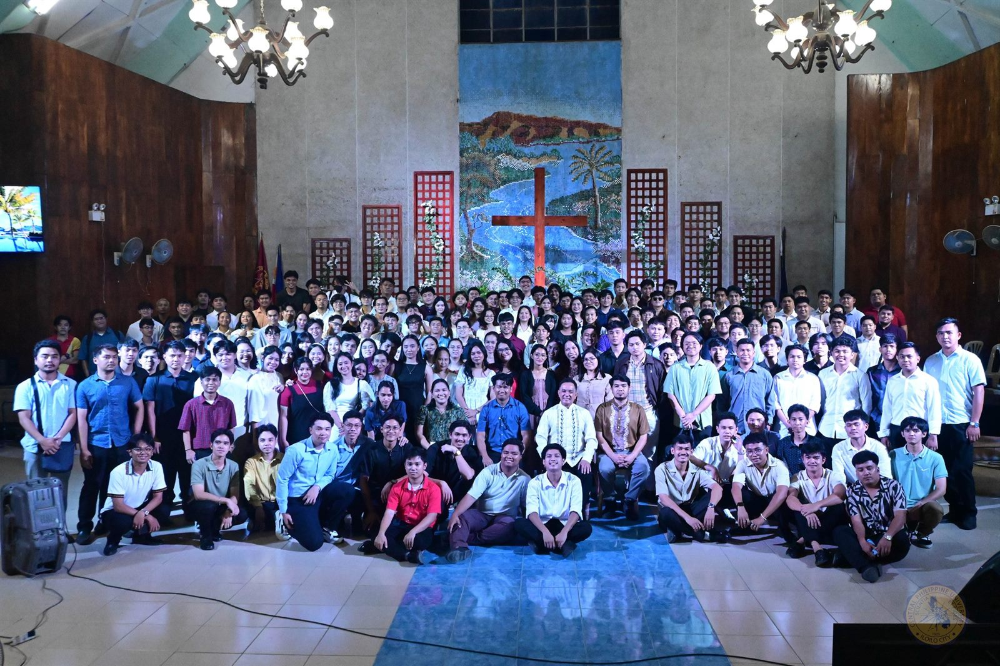
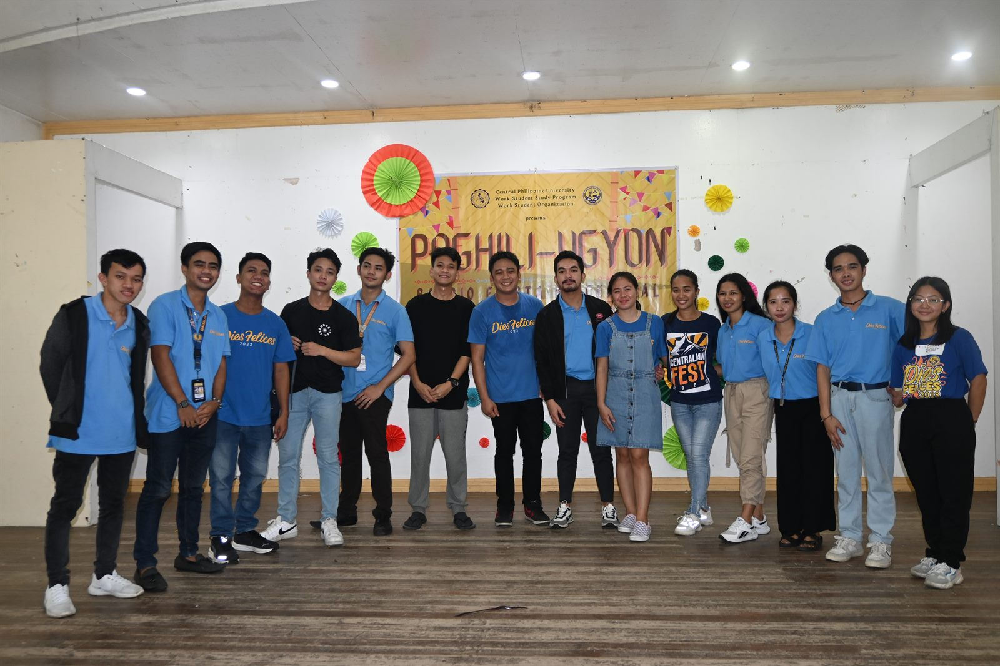
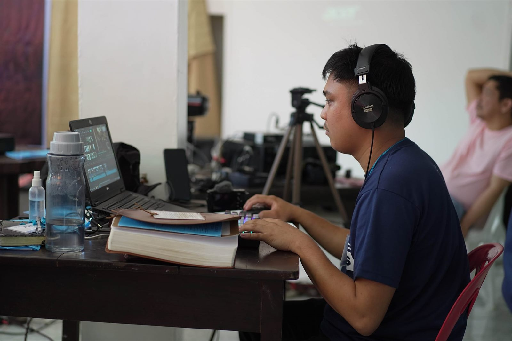

01Community & service
From leading campus organizations to volunteering in tech missions, I've always found joy in serving and building alongside others.
About me
IT professional, student leader, and multimedia storyteller — committed to using technology and creativity to serve people and tell stories that matter.

A passionate and committed IT professional with a heart for service and leadership. I'm currently pursuing a Bachelor of Science in Information Technology at Central Philippine University, where I've honed my skills in networking, web development, and cybersecurity while serving in various leadership roles.
My experience ranges from IT maintenance and clerical support at the Guidance Services Center to facilitating team-building events and community programs with Goducate. I've led multiple student organizations, including the Work Student Organization and Campus Bible Fellowship, where I developed strong interpersonal and project-management skills.
As a CCNA completer and a certified learner in JavaScript Essentials and Cybersecurity, I'm deeply invested in continuous learning and using technology to inspire and uplift others. My goal is to combine technical expertise with mission-driven service to make a meaningful impact in my community and beyond.
My journey
Leadership, service, and faith have shaped the way I work — with intention, empathy, and a long-term view.

01From leading campus organizations to volunteering in tech missions, I've always found joy in serving and building alongside others.
As a student leader, I learned how to guide teams, make strategic decisions, and communicate a vision with clarity and compassion.

03My experiences on the mission field strengthened my faith and shaped my desire to use digital skills for a higher purpose.
Gallery
Frames from events, organizations, and community work. Click any photo to view it full screen.







Contact
I'm open to opportunities in IT support, multimedia production, web development, and community-driven projects. The fastest way to reach me is on LinkedIn.